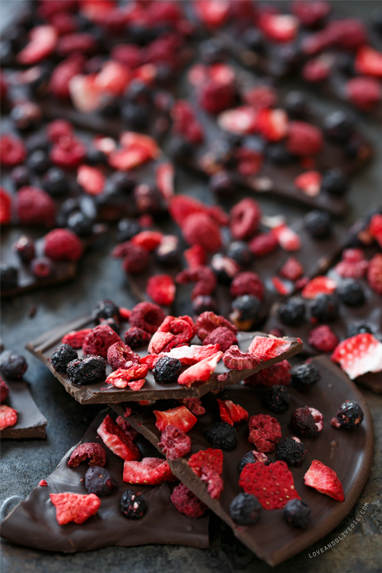

MENU
- CHOCCOLATE LIGHT
- CHOCCOLATE WITH STRAWBERRY
- CHOCCOLATE WITH NUTS
- CHOCCOLATE WITH FRUITS
- CHOCCOLATE WITH DATES
ABOUT LUXURY
Founded in 2005 in Beirut (Lebanon) by the young chocolatier SABAH KHODER, the Luxury Group is a family-run business and one of the largest chocolates and confectionery companies in the world. Today, our reach extends across 55 countries on 5 continents with iconic brands distributed in over 170 countries. With his global vision, built upon our heritage, Giovanni Ferrero continues to run the company successfully. Generation after generation, our commitment to creating value forms the basis for crafting our much-loved products in an ethical and socially conscious manner.
 Very nutritious
If you buy quality dark chocolate with a high cocoa content, then it’s quite nutritious.
It contains a decent amount of soluble fiber and is loaded with minerals.
Of course,
100 grams (3.5 ounces) is a fairly large amount and not something you should be consuming daily. These nutrients also come with 600 calories and moderate amounts of sugar.
For this reason, dark chocolate is best consumed in moderation.
The fatty acid profile of cocoa and dark chocolate is also good. The fats consist mostly of oleic acid (a heart-healthy fat also found in olive oil), stearic acid, and palmitic acid.
The stearic acid has a neutral effect on body cholesterol. Palmitic acid can raise cholesterol levels, but it only makes up one-third of the total fat calories.
Dark chocolate also contains stimulants like caffeine and theobromine,but it’s unlikely to keep you awake at night,
as the amount of caffeine is very small compared with coffee.
Very nutritious
If you buy quality dark chocolate with a high cocoa content, then it’s quite nutritious.
It contains a decent amount of soluble fiber and is loaded with minerals.
Of course,
100 grams (3.5 ounces) is a fairly large amount and not something you should be consuming daily. These nutrients also come with 600 calories and moderate amounts of sugar.
For this reason, dark chocolate is best consumed in moderation.
The fatty acid profile of cocoa and dark chocolate is also good. The fats consist mostly of oleic acid (a heart-healthy fat also found in olive oil), stearic acid, and palmitic acid.
The stearic acid has a neutral effect on body cholesterol. Palmitic acid can raise cholesterol levels, but it only makes up one-third of the total fat calories.
Dark chocolate also contains stimulants like caffeine and theobromine,but it’s unlikely to keep you awake at night,
as the amount of caffeine is very small compared with coffee.
HAVE MANY ITEMS OF CHOCOLATE

SOME BENEFITS ABOUT THE CHOCOLATE
Could improve brain function The good news isn’t over yet. Dark chocolate may also improve the function of your brain. Studies show that eating high flavanol cocoa can improve blood flow to the brain in young adults. This may explain why eating cocoa daily appears to improve attention, verbal learning, and memory (17Trusted Source). Cocoa flavanoids may also help maintain cognitive function in older adults with mild cognitive impairment and reduce the chance of progressing to dementia. But more research is needed (18Trusted Source).
READ MORE
CONTACT US
NAME:
EMAIL:
YOUR MESSAGE:
COMPLAINT
SUGGESTION